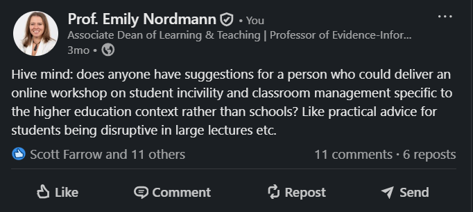
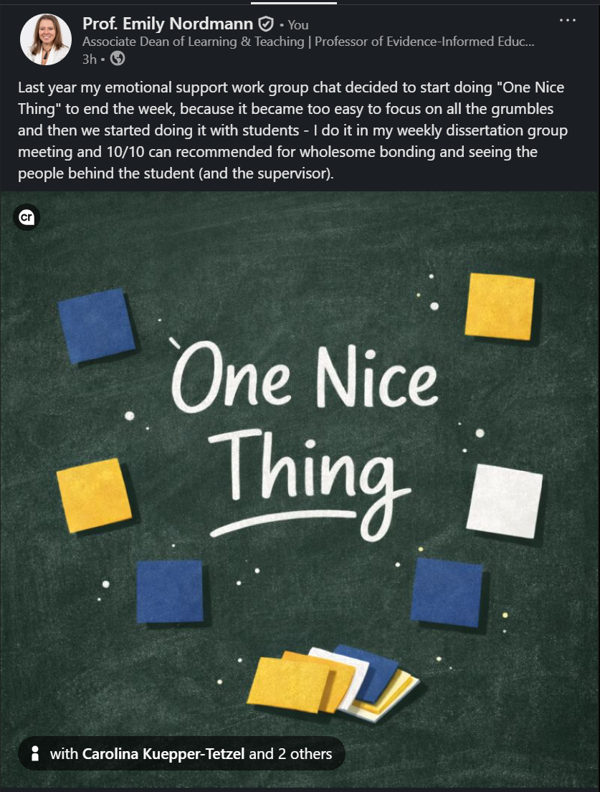
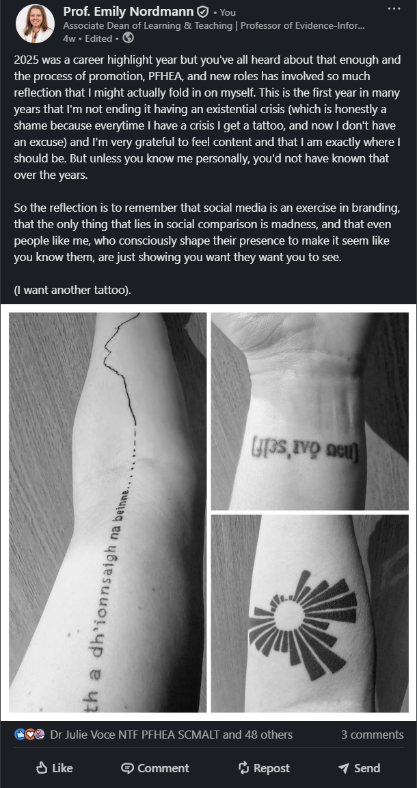

4 Creating Content
The question I get asked most about LinkedIn is “what should I post?” Everyone has a different style and what works for you will be different for what works for me but here’s a starter guide.
4.1 The Basic Principle
Post things that are genuinely useful, interesting, or engaging to people in your field. That is it. Everything else is details. You are well-placed to educate because you have expertise. You do not need to be the world’s leading authority on a topic to have something worth sharing. If you know something that others in your network might find useful, share it.
4.2 What Works
4.2.1 Sharing your own work
Share papers, preprints, and resources you have created. When you do:
- Explain what the paper is about in plain language
- Highlight why it matters and who should care
- Include a key finding or takeaway
- Link to an open access version if possible
- Tag co-authors who are on LinkedIn
- All posts benefit from images so e.g., take a screenshot of the abstract or a graph from the paper.
Here is an example:

4.2.2 Sharing others’ work
You do not have to create everything you share. Sharing papers and resources from others with your own commentary is valuable.
Add your perspective: why is this worth reading? What did you learn? This does more than share a link. It explains what makes the paper noteworthy and positions you as someone with expertise. It is entirely possible to build a following by being a person who shares a lot of stuff people find interesting and have none of it be your own work.

4.2.3 Reflecting on experience
Posts that share genuine experience resonate strongly. What you have learned, what challenged you, what you wish you had known earlier. This can work because it shares specific insights from real experience.

4.2.4 Asking questions
Asking questions can invite engagement and is a really useful way of getting information. Remember that specific questions get specific answers. Vague questions (“Any tips for teaching?”) get vague answers.

4.2.5 Images
Include images when you can. They make posts more visually distinctive in the feed and increase engagement. Even a screenshot of an abstract or a figure from a paper is better than plain text.
If you give a talk, take a photo of the room or your slides. If you are at a conference, document it. If you are reading something interesting, photograph the book. These do not need to be professional quality. They just need to break up the text and give people something to look at.

4.3 What Does Not Work
Pure self-promotion without value. “Excited to announce my new paper!” with a link (sometimes not even with a link) and nothing else. Tell people why they should care.
Generic inspirational content. LinkedIn is full of this already. Unless you have something distinctive to say, skip the motivational posts.
Engagement bait. “Like if you agree!” or “Comment YES for more content!” This is annoying and increasingly penalised by the algorithm.
Excessive posting. Once a day is plenty. Several times a week is fine. Multiple times a day and you risk becoming noise.
Controversial takes for the sake of engagement. Hot takes can work if you genuinely believe them and can defend them. Manufactured controversy is transparent and tiresome.
4.5 A Note on AI-Generated Content
LinkedIn is saturated with AI-generated content. Generic posts, obvious ChatGPT copy-pasta, comments that say nothing. It’s awful but if you have even an inkling of a personality this creates an opportunity for authentic human voices to stand out.
Do not use AI to write your posts. The point of LinkedIn is building genuine connections, and you cannot do that with content that could have been written by anyone. People connect with people, not with smoothly optimised content.

Is the above post slight unhinged? Yes. But it’s very clearly a unhinged human.
AI may be able to with checking grammar and brainstorming ideas (that you then write yourself), but as with everything, the distinction is AI as a tool supporting your thinking versus AI replacing your thinking.
Be yourself, even if it is messy. Rough but genuine beats smooth but generic.